将 RTL 设计与 UVM Testbench 同 Hyperledger 区块链及机器学习集成以提升效率与优化
论文针对 ASIC 验证约占设计量 70%、time-to-market 压力下集中式回归与 CI 面临的持续监控负担、版本控制系统间克隆数据库耗时、大规模自动回归撑爆磁盘、以及 Jenkins 等集中式 CI 缺乏不可篡改审计记录等问题，提出将 Hyperledger Fabric 许可区块链与 RTL 及 UVM testbench 集成。方法上以 GO API/Chaincode 作为 FIFO RTL 之上的 Smart Contract 包装，经 Fabric SDK-Python 集成、Python Server 与 C/C++ Client Socket 连接，再通过 DPI-C（libdpi_client.so）接入 SV/UVM，使低计算复杂度（无 loop/latency/wait）的测试场景可在区块链节点执行，并以链上 metadata/哈希缓解磁盘无限增长；同时引入无监督学习的 Anomaly detection，按 error signature 对 UVM 失败分桶并捕捉离群失败，辅助发现协议违例与 corner case。论文对比了 Ethereum/Solidity 方案，因公开链保密性不足、GAS 费用与较低交易速度而选择 Hyperledger。关键结论是框架可行并具备去中心化协作与审计追踪优势，但全文未给出回归效率、coverage closure 或磁盘节省的量化实验数据。
在芯片复杂度持续上升、约 70% 的 ASIC 设计工作量投入验证的背景下，传统集中式回归与 CI 流程存在多重痛点：需要持续监控与更自动化的流程；大规模自动回归导致磁盘空间告急；在不同 revision control 系统间克隆数据库浪费大量时间；Jenkins 等集中式 CI 无法提供不可篡改的审计记录且 CI artifact 可无限增长。论文希望在保证质量的同时满足 time-to-market，实现回归管理自动化、快速 coverage closure 与基础设施成本降低。
采用 Hyperledger Fabric 许可区块链（通过 Certificate Authority 与 MSP 控制准入、Endorsing Peer 验证交易、Gossip 协议传播交易、Chaincode 自执行代码、PBFT 共识）构建去中心化验证基础设施。集成路径为：GO API 作为 FIFO RTL 之上的 Smart Contract 包装连接 Fabric SDK，再经 Python Server 与 C/C++ Client 的 Socket 连接，通过 DPI-C（生成 libdpi_client.so，使用 import DPI-C）接入 SV/UVM testbench。与 Jenkins 对照，主张以去中心化方式执行低计算复杂度测试场景、在链上保存 metadata/哈希形成不可篡改审计记录并避免磁盘无限增长。在此之上集成无监督机器学习的 Anomaly detection，对 UVM 失败按 error signature 分桶并识别离群失败，无需先验标注即可自动捕捉 failure mode，辅助发现协议违例与 corner case。论文还尝试并对比了 Ethereum/Solidity（ABI、web3.js）路线并说明弃用原因。
未在论文中说明：论文未报告集成框架在回归效率、coverage closure 时间、磁盘空间节省等方面的量化实验结果
论文引用的框架特性数据：PBFT 共识可以约 15,000/sec 的速度验证交易（为 Hyperledger 特性描述，非本文实验测得）
以 FIFO 为参考设计完成概念验证，演示了 Fabric client - Python Server - C Client - SV/UVM 链路的执行序列，但未给出任何验证质量或性能对比数据
区别于传统集中式 CI（Jenkins）路线，论文将许可链 Hyperledger Fabric 引入 RTL/UVM 验证基础设施：以 CA/MSP 准入、Endorsing Peer、Gossip 协议、Chaincode 与 PBFT 共识构成去中心化的回归执行与审计框架，链上保存 metadata/哈希以避免磁盘无限增长，这是 Jenkins 无法提供的。并将无监督异常检测与该区块链框架结合，实现无需先验标注的失败模式与错误签名自动归类。论文还实际尝试了 Ethereum/Solidity 集成路线，并从保密性、GAS 费用与交易速度三方面论证选择 Hyperledger 的理由。
相关度级别：high
命中能力域：2.4 设计验证方法学 | 2.7 EDA/验证自动化与 AI 辅助
理由：论文直接命中 2.4 域明确覆盖的回归与 CI、bug triage 与 debug 方法学等代表工程场景，也命中 2.7 域的验证流程自动化与 AI 辅助 bug 分析：回归管理自动化、coverage closure、磁盘空间治理、失败签名分桶与异常检测均是团队在 LPDDR/UCIe 等产品线大规模回归中的真实痛点。但需注意，其区块链载体并非团队既有技术栈，且全文无量化收益数据，价值主要在于问题定义、Jenkins 对比视角与 ML triage 思路，而非可直接照搬的落地方案。
建议动作：作为方法参考存档
Sougata Bhattacharjee 三星半导体印度研究院（Samsung Semiconductor India Research, SSIR） 印度班加罗尔
摘要——随着芯片和集成电路（IC）内部计算复杂度的不断攀升，以及在不牺牲芯片质量的前提下满足上市时间的严苛要求，将自动化与现代测试平台（testbench）架构付诸实践已成为当务之急。撰写本文的动机在于介绍 Hyperledger Fabric 区块链，并将其与基于寄存器传输级（RTL）和通用验证方法学（UVM）的测试平台相集成。这种集成不仅有助于实现回归管理的自动化，还能够实现快速的覆盖率收敛（coverage closure）、改善服务器空间内的基础设施以解决磁盘空间相关问题，并以去中心化的方式使更多工程师能够围绕共同目标开展协作。此外，将基于机器学习的应用与区块链相集成，有助于借助异常检测（Anomaly Detection）发现异常失效，并通过最大限度地降低基础设施成本和磁盘空间问题，构建可复用且高效的测试平台，从而使计算复杂度较低的测试场景（例如：不包含循环、延迟、等待）能够直接在区块链上运行。
摩尔定律（Moore's law）指出“晶体管数量每 2 年翻一番”，但数据显示，由于芯片本身的复杂性，芯片的晶体管数量实际上每 18 个月便增长一次，以便在单个集成电路（Integrated Circuit, IC）中容纳更多功能。为确保设计或产品能够无缝运行、不出现任何失效或故障，专用集成电路（ASIC）设计中近 70% 的工作都投入到验证中，以确保设计中不存在硅缺陷（silicon bugs）。
随着芯片和 IC 的固有特性使 ASIC 验证过程日益复杂，使用传统方法在降低成本的同时达成上市时间（time-to-market）目标已成为一项具有挑战性的任务。解决该问题的方案之一是使测试平台（testbench）更加健壮和高效，从而通过持续的回归执行和高质量的覆盖率收敛（coverage closure）及时修正缺陷。但这种方法自身也存在挑战：需要持续监控、更多自动化流程、更大的磁盘空间以及回归管理。
除此之外，寄存器传输级（RTL）和通用验证方法学（UVM）测试平台中的基础设施管理也是一个严重问题，因为在将数据库从一个版本控制系统克隆到另一个版本控制系统时，版本控制系统不匹配会浪费大量时间。此外，由于测试场景的大规模自动化回归，磁盘空间正被不断占满，这是一个令人担忧的问题。
Hyperledger Fabric 框架 [4] 与机器学习（Machine Learning, ML）相结合，有助于解决上述所有关键挑战，随后可将其与基于 UVM 的测试平台相集成。Hyperledger Fabric 是一种许可型区块链（permissioned Blockchain），仅限受限用户借助证书颁发机构（Certificate Authority, CA）和成员服务提供者（Membership Service Provider, MSP）参与网络，从而增强隐私性和保密性。
区块链是在分布式对等（peer-to-peer）网络中相互连接、持续增长的记录或交易列表。网络中的所有区块均使用 SHA256 算法安全地连接在一起，从而使网络具备防篡改能力。
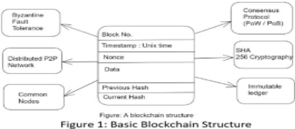
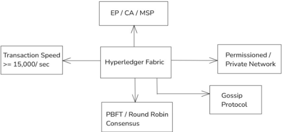
Hyperledger Fabric 是一种许可区块链（permissioned blockchain），由于其机密与私有的特性，它与以太坊（Ethereum）等公有区块链有所不同。为了维持这种机密性，系统为被选中的对等节点（peer）提供证书颁发机构（Certificate Authority，CA），使其能够参与网络。
背书对等节点（Endorsing Peer，EP）是网络中拥有对交易进行投票和验证权限的成员。
交易在网络中流动所采用的方法。它的工作方式类似于谣言的传播，速度极快，本框架中将同样的概念应用于交易的可达性。
在区块链上运行的自执行代码。
实用拜占庭容错（PBFT）是一种使网络中的大多数节点得出结论或就交易有效达成共识的机制。PBFT 速度更快，能够以每秒 15,000 笔的速度验证交易。
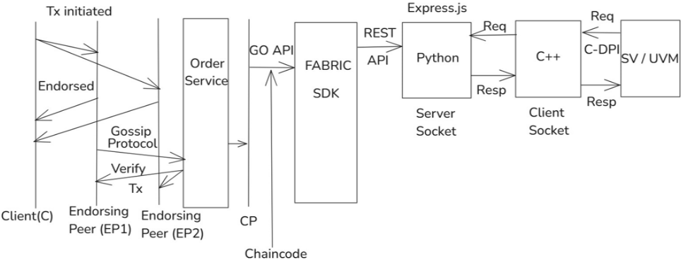
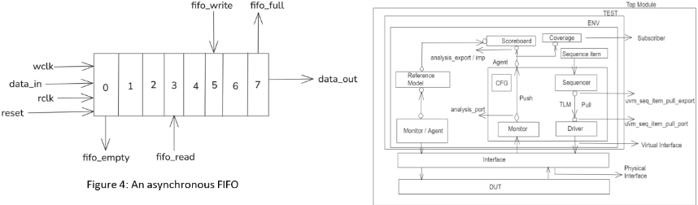
本文最重要的构建模块之一是将 Fabric SDK 与 Python 集成，从而能够创建客户端-服务器和套接字（socket）连接，这为后续与基于通用验证方法学（UVM）的验证平台集成提供了便利。为此，需要进行直接编程接口（DPI）调用，将 C 与 UVM 集成起来。
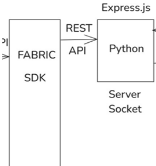
如图 3 所示，GO API 首先与 Fabric SDK 建立连接，随后整个流程按下文所述开始。但在继续执行集成步骤之前，了解 GO API 的作用十分重要。
GO API 是 Hyperledger Fabric 的核心基础层，可用于 Chaicode（一种在区块链上运行且无法被修改的自执行代码）的执行、交易验证和节点审查，并且是将区块链与半导体/超大规模集成电路（VLSI）相连接的关键参数。在本文以先进先出（FIFO）作为参考对象的语境下，GO API 充当位于 FIFO RTL 之上的智能合约（Smart contract）（基本上是用 GO 语言编写的自执行代码的封装器，它定义了 FIFO 的规则，简而言之即其工作原理）。
集成步骤：
编写并执行了（fabric_server.js、python_client.py、organization.json、admin.js 和 regusers.js）代码。
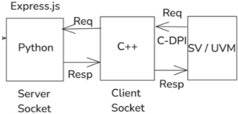
小结：
简而言之，Hyperledger Fabric 区块链通过 Go API 与 Fabric SDK 建立连接，随后借助 Python 服务器和 C/C++ 客户端套接字连接，与针对特定 RTL 设计的 SV/UVM 验证平台建立连接。
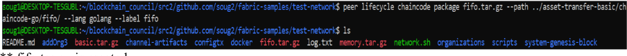
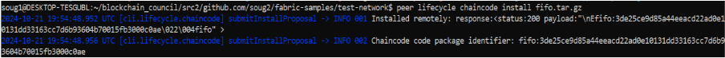
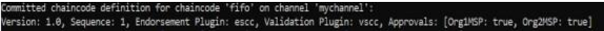
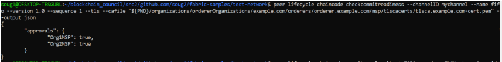
用于 Hyperledger 安装的链码调用（chaincode invoke）命令和排序节点 TLS（orderer TLS），它们将进一步与 Fabric SDK 交互，随后再与 UVM 验证平台交互，如下所示：
peer chaincode invoke \ -C mychannel -n basic \ -c '{"Args":["CreateAsset","asset1","blue","10","Tom","100"]}' \ --peerAddresses peer0.org1.example.com:7051 \ --peerAddresses peer0.org2.example.com:9051 \
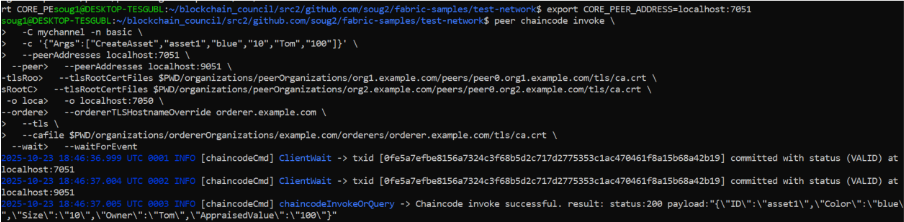
在集成式 Hyperledger 区块链中，实现了无监督机器学习（Unsupervised Machine Learning）的异常检测功能，该功能有助于对 UVM 失效进行分类，并根据错误签名将其分桶归类。
在 UVM 中，可以依据失效签名对缺陷进行分类，但也存在一些无法归入该类别的离群点；针对这些情况，异常检测之类的功能就十分有用。这种基于异常检测的 ML 学习模式有助于发现协议违规和边界场景（corner case）。因此，本文实现了 Hyperledger 框架 + 无监督学习 ML 模型的集成框架。
这类模型对于在无需预先标注的情况下自动捕获失效模式和错误签名尤为有用。集成式 Hyperledger 还进一步有助于覆盖率跟踪、回归管理、缺陷修复报告以及验证流程的自动化；最重要的是，它使低计算量的测试场景能够使用区块链服务器而非中央服务器，从而最大限度地减少磁盘空间占用。
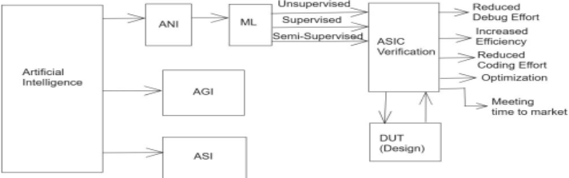
如图 10 所示，业界还尝试过另一种方案，即将通用验证方法学（UVM）验证平台 / 寄存器传输级（RTL）设计与以太坊（Ethereum）区块链相集成。智能合约是一种运行在区块链上的自执行代码，本质上不可修改，采用 Solidity 编程语言编写 [1][2]，它包含两个主要部分：应用二进制接口（Application Binary Interface, ABI）和字节码（Bytecode）。其中 ABI 专门用于与外部世界建立连接，而这只能借助 web3.js 或 ether.js 来实现。
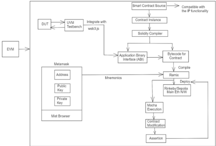
但以太坊之所以不是首选方案，其主要问题在于它是一条公有区块链，而本项目是在公司内部实施的，需要保密性和隐私性。因此，出于这一原因，本文考虑采用 Hyperledger。此外，随着计算复杂度的增加，以太坊中的 GAS 费用（GAS Fees）会成为问题（在区块链上执行代码需要支付费用），而 Hyperledger 则不存在这一问题，因为其交易速度（约 15,000 笔/秒）远高于以太坊。基于上述原因，Hyperledger 被认为是一种更具创新性且更为理想的方法。
Hyperledger Fabric 使用椭圆曲线数字签名算法（ECDSA）对交易进行签名，并采用高级加密标准（AES）对称加密机制来保障数据隐私。此外，如今应用于在区块链上执行特定任务的机器学习算法也能提供安全性。然而，挑战在于，随着近年来量子计算机的兴起，正如 Shor 算法所表明的那样，与经典计算机相比，它能够在多项式时间内求解复杂的对数与离散因数分解问题，这使得 AES 加密及其他安全措施变得脆弱。
因此，目前正针对后量子密码算法开展研究，以使现有的区块链网络和 AI 模型能够抵御量子攻击。其中一些算法包括：